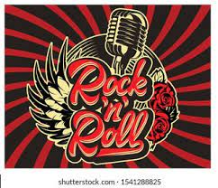
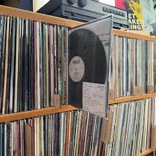
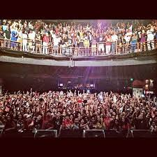
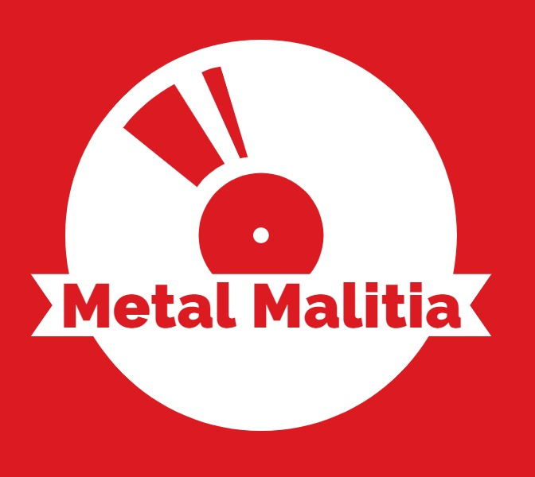

WELCOME:
At Metal Malitia, we are passionate about the raw power, creativity, and diversity found in rock and metal music. Whether you're a seasoned headbanger or a newcomer eager to explore the vast world of blasting guitar riffs and thunderous beats, you've come to the right place.
MISSION:
Our mission is simple: to curate and recommend the best rock and metal albums across various subgenres. We believe in the transformative power of music and aim to provide a platform where enthusiasts can discover new sounds, rediscover classics, and connect with a community that shares their love for powerful and authentic music.
COMMUNITY
One of the unique features of Metal Malitia is that it's not just about our recommendations. We invite you, our valued users, to contribute to the music discovery experience. Feel free to add your favorite rock and metal songs, albums, and artists to our ever-growing collection.
ROCK ON
Metal Malitia is more than a website; it's a community-driven
platform for all things rock and metal. Join us on this musical
journey as we explore the depths of powerful soundscapes and
celebrate the timeless genre that continues to inspire generations.
The Metal Malitia Team
